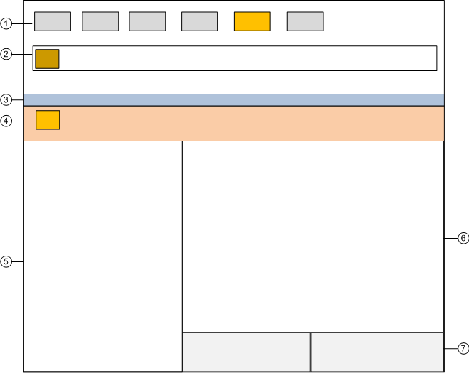

Investigative Treatment Window
Investigative Treatment Workspace

1 | Summary bar | Contains a set of event lamps that provide an overview of the events in the system. For more details, see Event Lamps and Summary Bar. |
2 | Event Detail bar | In some configurations, prominently displays an event that requires immediate attention across the top of the screen. |
3 | Title bar | Shows the name of the Investigative Treatment window. It also contains some icons to open/close the Contextual pane (7), lock the layout and, restore down the window. |
4 | Event descriptor | Contains the event button, event details and event-handling commands for the event currently being processed. For more details, see the reference section. The background color reflects the event category color, but in a darker shade. |
5 | Selectionpane | Contains System Browser which displays the highlightedevent source. |
6 | Primary pane | Contains the system application (for example, Graphics Viewer) associated with the event source currently highlighted in System Browser. |
7 | Contextual pane | Displays by default and provides additional information, actions, and resources about the object that issued the event. The following tabs are available:
|